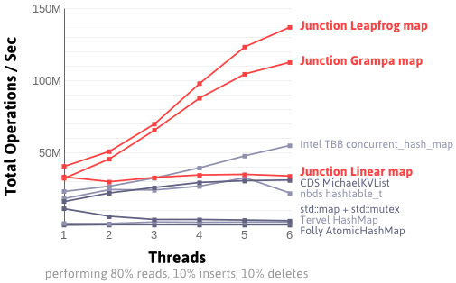

写在最前面
由于一个算法环节的优化中，需要通过Hash表的并发读写来优化速度，而std::map和std::unordered_map并非线程安全，如果一定要用只能加锁，但这样又会有额外消耗，得不偿失。因此需求一个线程安全的并发HashMap，现有的C++库选择并不多比如TBB，偶然间发现了Junction_ConcurrentMap库,本文对HashMap、现有C++并发Hash库、Junction的编译及用例做了简要介绍，并未涉及Hash函数相关内容。
什么是HashMap
数组和链表
数组和链表是两种常见的数据结构，他们各有优缺点：
- 数组长度固定，下标与值一一对应，可以通过下标对存储的值进行索引,查询时间复杂度为O(1)。其长度固定正是其缺点，分配长度过短如果实际存储数据量超过定长会报错，而分配过大空间又会造成不必要的浪费，且占据的空间不会随元素的删除而释放。
- 链表是一种物理存储单元上非连续、非顺序的存储结构，数据元素的逻辑顺序是通过链表中的指针链接次序实现的，其优势为无长度限制，非顺序的存储结构使内存利用更为充分，一般的单链表查询时间复杂度为O(n)。
HashMap
HashMap则是一种既不定长又无需遍历查询的数据结构，在无冲突的情况下时间复杂度为O(1)，而这是通过牺牲更大空间而实现的，是一种空间换时间的做法。HashMap用KEY-VALUE来实现数据存储，插入数据时将KEY通过Hash函数转换为Hashcode(通常为32位或64位uint)，由Hashcode决定存储的位置。但是存在一个冲突问题，那就是当你用Hash函数作用在两个互不相同KEY时，得到了相同的Hashcode，也就是不同的KEY-VALUE将会存到相同位置，这时就需要解决冲突，通常的解决办法有：开放定址法、链地址法、再哈希法等。
C++并发HashMap
C++并没有像Java那样原生的ConcurrentHashMap，通常有如下解决方案：
- std::map+std::mutex：利用std::map加锁实现
- TBB concurrent_hash_map：Intel公司开发的并行编程开发的工具
- libCds MichaelKVList：一个无锁、细粒度算法的C++模板库
- nbds hashtable_t：非阻塞结构的C实现
- Tervel HashMap：一种为共享内存系统设计的无等待算法
- Folly AtomicHashMap：一个Facebook开源的C++库
junction
关于junction
junction是一个并发数据结构库，也正是本文将着重介绍的。junction包含多种HashMap的实现方式：
- ConcurrentMap_Crude：一种并发HashMap的简陋实现
- junction::ConcurrentMap_Linea：一种受Java non-blocking HashMap启发的简单无锁HashMap
- junction::ConcurrentMap_Leapfrog：类似于Linea，但是使用了跳房子哈希法（Hopscotch Hashing）的松散搜索策略
- junction::ConcurrentMap_Grampa：其与Leapfrog类似，但是在数据量大的时候会拆分成多个更小的、定长的Leapfrog
速度对比
junction与其他并发Hash库的对比

Turf
junction依赖于作者自己的另一个Turf库，它提供了很多跨平台（Windows、Ubuntu、OS X、iOS）的API，如线程、原子操作、锁等。
编译
|
|
简单用例
如下为简单用例，注意Key不可取0或1
对比测试
对于Leapfrog，利用OpenMP实现4线程并发存取1000000个int，结果如下：
测试代码如下：